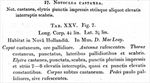

Click on images to enlarge
{kind=link}

Fig. 1. Notoclea castanea, description
Name
Notoclea castanea Marsham, 1808
Corresponds to
Ta26.
Diagnosis and Notes
Blackburn (1897, p. 166) deals with P. castanea as part of his 'subgroup iv' (i.e., those species without "strongly marked characters", and whose greatest height is considerably in front of the middle of the elytral margin). Within that group, he characterises it as:
A. Prothorax distinctly explanate at the sides;
B. Subhumeral depression present;
C. Elytral verrucae concolorous with the derm, closely set in regular series and not large;
D. Marginal part of the elytra well defined near apex, with a distinct sulculus.
T. castanea is situated next to T. catenata in the key, separating them by a character (the presence of a distinct sulcus near the elytral apex that separates the discal from the marginal part) that is not at all helpful in delineating these two species. In his notes on T. simulans, he indicates that T. castanea bears a remarkable superficial resemblance to it.
T. castanea (Marsham) is almost certainly Ta26, by comparison with material in the BMNH (although no type specimen was found). The size in Marsham's description is in the middle of the size distribution for Ta26. The "7–8 interrupted raised ridges, almost as if formed from elevated punctures" describes the form of the rows of verrucae in catenata-group species rather well. The uniform chestnut-brown colour dorsally fits Ta26 well, although the legs are usually of a similar shade to the rest of venter.
Note that Weise (1916) describes a colour variant of castanea from western N.S.W. with more extensive black markings, that he names signifera.
Type specimen
Not examined.
Original description
Translation of original description (Figure 1) by ChatGPT, 03/2026:
Chestnut-coloured; elytra with impressed punctures and several rough interrupted raised streaks.
Plate XXV, Fig. 7.
Length of body 4½ lines (~9.5 mm), width 3½ lines (~7.4 mm).
Occurs in New Holland. In the collection of D. MacLeay.
Head chestnut-coloured, mouthparts paler. Antennae reddish. Thorax chestnut-coloured, punctured, the sides paler and rough. Elytra chestnut-coloured, punctured and rough, with numerous impressed punctures and 7–8 interrupted raised ridges, almost as if formed from elevated punctures. Underside of the body chestnut-coloured. Legs somewhat paler or reddish.
References
Blackburn, T. 1897, "Revision of the genus Paropsis. Part II", Proceedings of the Linnean Society of New South Wales, vol. 22, 166-189 (page 166).
Marsham, T. 1808, "Description of Notoclea, a new genus of coleopterous insect from New Holland", Transactions of the Linnean Society of London, vol. 9, 283-295 (page 292).
Weise, J. 1916. Results of Dr. E. Mjöberg's Swedish scientific expeditions to Australia 1910-1913. 11. Chrysomeliden und Coccinelliden aus West-Australien. Arkiv för Zoologi 10(20): 1-51 (page 32).
Copyright © 2026. All rights reserved.